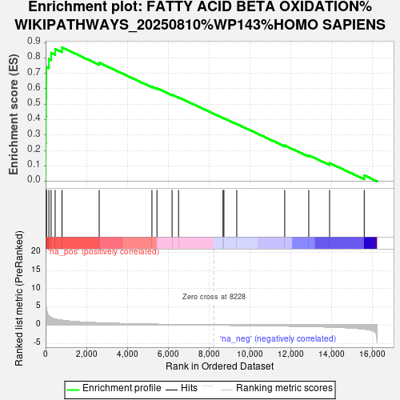
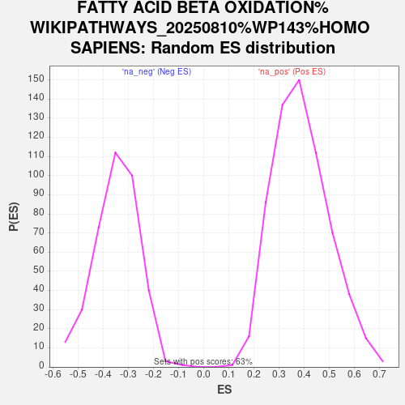

| Dataset | PAL_vs_CTL_ranked |
| Phenotype | NoPhenotypeAvailable |
| Upregulated in class | na_pos |
| GeneSet | FATTY ACID BETA OXIDATION%WIKIPATHWAYS_20250810%WP143%HOMO SAPIENS |
| Enrichment Score (ES) | 0.8677739 |
| Normalized Enrichment Score (NES) | 2.225756 |
| Nominal p-value | 0.0 |
| FDR q-value | 2.2125906E-4 |
| FWER p-Value | 0.004 |

| SYMBOL | RANK IN GENE LIST | RANK METRIC SCORE | RUNNING ES | CORE ENRICHMENT | |
|---|---|---|---|---|---|
| 1 | ACSL3 | 3 | 10.824 | 0.2473 | Yes |
| 2 | CPT1A | 13 | 7.592 | 0.4203 | Yes |
| 3 | HADHB | 23 | 5.385 | 0.5429 | Yes |
| 4 | ACADVL | 34 | 4.416 | 0.6433 | Yes |
| 5 | SLC25A20 | 39 | 4.303 | 0.7414 | Yes |
| 6 | ACSS2 | 160 | 2.559 | 0.7925 | Yes |
| 7 | CHKB | 270 | 2.059 | 0.8329 | Yes |
| 8 | ACSL1 | 468 | 1.653 | 0.8585 | Yes |
| 9 | ACSL5 | 805 | 1.312 | 0.8678 | Yes |
| 10 | ACADS | 2625 | 0.580 | 0.7688 | No |
| 11 | DLD | 5207 | 0.217 | 0.6145 | No |
| 12 | GPD2 | 5453 | 0.192 | 0.6038 | No |
| 13 | ACADM | 6194 | 0.130 | 0.5611 | No |
| 14 | PNPLA2 | 6510 | 0.108 | 0.5442 | No |
| 15 | ACAT1 | 8688 | -0.027 | 0.4105 | No |
| 16 | DECR1 | 8731 | -0.031 | 0.4086 | No |
| 17 | CRAT | 9360 | -0.070 | 0.3715 | No |
| 18 | CPT2 | 11709 | -0.250 | 0.2323 | No |
| 19 | LIPC | 12886 | -0.384 | 0.1685 | No |
| 20 | GCDH | 13906 | -0.540 | 0.1180 | No |
| 21 | ECHS1 | 15602 | -1.103 | 0.0387 | No |
